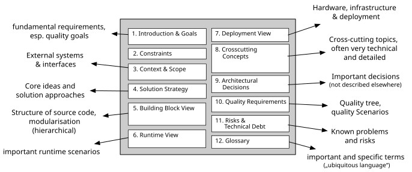

the architecture ecosystem
the architecture ecosystem01 Goals
What must the system achieve?
Twelve connected concerns
The sections are not boxes to fill. They connect goals, constraints, structures, behavior, decisions, quality, and risk.
The colorful groups reveal relationships without changing the canonical 01 to 12 structure.
What must the system achieve?
What limits the solution?
Where is the boundary?
Which choices shape everything?
What exists, how does it run, and where?
Concepts, decisions, quality, risks, and language.

From question to section
A developer can ask for “section 8,” a reviewer can compare risks across systems, and a new team member can find context without learning a unique document structure.